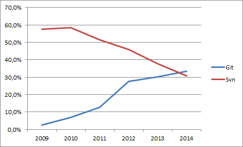

Git and DevOps
Created by Chad Hurd / @caffgeek
Why Git

Eclipse Community Survey 2014
Use the CLI - Cheatsheet
#create a new repository
git init
#clone a repository
git clone http://gihub.com/caffgeek/reveal.gitdevops
#get the changes from the server
git pull #basically a fetch then merge
#check what has changed
git status
#commit changes locally
git add -A #stages all changes
git commit -m "checkin message"
#push changes to git server
git push
Git Demo
Resources
Tooling around Git
WebHooks
What's out there?
- Travis CI
- Circle CI
- Code Climate
- Coveralls
- VersionEye
- David
Travis CI
...
Circle CI
...
Code Climate
...
Coveralls
...
VersionEye
...
David
...